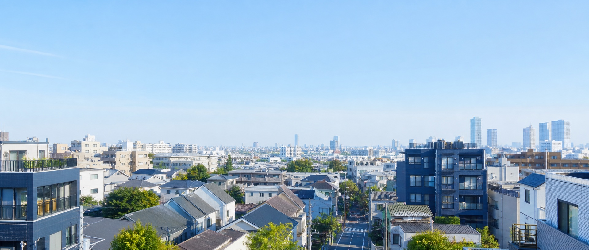

5件
Current listings
現在公開中の物件情報です。
価格・面積・募集状況は、株式会社籠やの現行公式サイトに基づき2026年8月13日時点で整理しています。条件は変更されることがあるため、検討時は各物件の公式詳細ページをご確認ください。
Residential販売中物件
販売中物件
土地建物・マンション
住み心地だけでなく、建物の状態や管理、将来の売却可能性まで含めてご相談いただけます。


掲載情報について
WordPress掲載物件88件を画像付きで見る →
物件情報は公式サイトの販売中物件一覧をもとに移行しています。価格・面積・利回り・販売状況は変更または成約となる場合があります。
移行した物件詳細を見る →WordPress掲載物件88件を画像付きで見る →
気になる物件を、条件から相談する。
購入判断や資金計画も含めて、分かる範囲からお聞かせください。